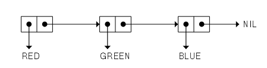

Under the Hood of Lists - A Low-Level Exploration of Cons Cells in Lisp
Yesterday, I published an article exploring the history behind the functions car and cdr. Motivated by the insights gained from that exploration, I decided to delve deeper into the fundamental structures of Lisp. Lisp distinguishes itself from other programming languages through its unique approach to representing both code and data. At the core of this language are lists, structures so fundamental that they are often described as the “heart of Lisp.” This article provides an in-depth exploration of lists at the lowest level by examining their internal representation through cons cells. We will demonstrate how lists serve as versatile data structures capable of representing sets, vectors, matrices, tables, trees, graphs, and even functions.
Representations of Lists
In Lisp, lists are understood from two interrelated perspectives that reveal different layers of abstraction. The first is the printed representation—a notation designed for human readability. In this form, lists are enclosed in parentheses; for example, `(a b c)` clearly delineates each element in a sequential manner, emphasizing the simplicity and consistency of Lisp syntax.
The second perspective delves into the internal representation, where lists are constructed using cons cells. This approach is central to Lisp’s flexibility, as it represents lists not merely as sequences of symbols, but as dynamically linked structures. Cons cells use pointers to connect individual elements, forming a cohesive chain that the language runtime efficiently processes.
Cons Cells: The Fundamental Building Blocks
Cons cells are the core elements that form the internal structure of lists in Lisp. Each cons cell is a simple data structure composed of two components. The first component, known as the car, holds the actual data element. The second component, called the cdr, typically contains a pointer to the subsequent cons cell or, when it is the last element, to a special marker—usually `nil`—that denotes the end of the list.
This pointer-based organization of cons cells not only supports dynamic list construction but also facilitates the creation of more complex data structures. By linking cells in a chain, Lisp can efficiently handle operations such as traversal, modification, and recursive processing. This elegant design underpins many of the powerful features of Lisp, making cons cells a fundamental concept for understanding both the structure and behavior of Lisp programs.
Mechanism of Cons Cells
To illustrate, consider the printed list `(red green blue)`. Its internal representation is composed of three cons cells. Each cons cell is a structure with exactly two segments: the car, which holds the element’s value, and the cdr, which holds a pointer to the next cons cell or, if it is the last cell, to `nil`.
- In the first cons cell, the car stores `red` and the cdr points to the second cons cell.
- In the second cons cell, the car stores `green` and the cdr points to the third cons cell.
- In the third cons cell, the car stores `blue` and the cdr is set to `nil`, explicitly marking the end of the list.

In essence, each cons cell is a structure with two parts. One part holds the actual value of an element (such as RED, GREEN, or BLUE), and the other part holds a pointer to the next cons cell in the sequence. For example, in the list (RED GREEN BLUE), the cell that contains RED holds its value in the first part and a pointer to the cell containing GREEN in the second part. The cell with GREEN similarly points to the cell holding BLUE, and the final cell signals the end of the list. Essentially, the labels RED, GREEN, and BLUE represent the values stored in the car (value part) of each cell, while the cdr (pointer part) links the cells together to form the complete list.
Detailed Example
Consider the list `(a b c)`:
- The first cons cell is constructed as `cons(a, cell2)`, where `a` is stored in the car and `cell2` (a pointer) is stored in the cdr.
- The second cons cell is formed as `cons(b, cell3)`, linking the element `b` to the next cons cell.
- The third cons cell is built as `cons(c, nil)`, with `c` in the car and the cdr pointing to `nil`, signaling the end of the list.
This chain-like arrangement of cons cells provides a robust foundation for list manipulation, allowing recursive processing and dynamic memory allocation.
Fundamental Operations on Cons Cells
Understanding cons cells is crucial for grasping the basic operations on lists in Lisp:
- car: This function retrieves the value stored in the car of a cons cell, effectively accessing the first element of the list.
- cdr: This function returns the pointer stored in the cdr, which refers to the remainder of the list.
- cons: This function constructs a new cons cell by combining a given element with an existing list (or `nil`), thereby prepending the element to the list.
These operations are instrumental in both accessing and constructing lists, enabling the development of complex data structures through recursive techniques.
Advantages and Implications of Using Cons Cells
The use of cons cells for representing lists in Lisp offers significant benefits that have deeply influenced the language’s design and programming paradigms. One of the core advantages is flexibility: the pointer-based structure of cons cells allows for the creation of dynamic data structures without requiring a predefined size. This adaptability enables the modeling of various constructs, ranging from simple sequences to more elaborate and interconnected data forms.
Additionally, the uniform approach of using the same data structure for both code and data simplifies the processes of program manipulation and transformation. This consistency not only aids in maintaining clarity and coherence in program design but also empowers advanced metaprogramming techniques, where the same underlying representations facilitate both the generation and execution of code.
Moreover, the inherent design of cons cells lends itself naturally to recursive processing. Their chain-like arrangement supports the implementation of recursive algorithms and divide-and-conquer strategies, which are central to many of the elegant solutions found in Lisp. This recursive capability enhances both the efficiency and expressiveness of the language, allowing programmers to develop complex algorithms with relative ease.
Conclusion
A thorough understanding of the internal representation of lists via cons cells unveils the elegance and power inherent in Lisp’s design. By exploring the low-level mechanics of list construction and manipulation, one can appreciate the intricate interplay between simplicity and flexibility that defines the Lisp paradigm.
This investigation not only clarifies the operational details of cons cells but also underscores their profound impact on the broader realm of computer science. The ability to represent both code and data uniformly is a hallmark of Lisp, a feature that continues to influence the development of modern programming languages.
Further Study Recommendations: Exploring “COMMON LISP: A Gentle Introduction to Symbolic Computation”
One particularly valuable resource for those beginning their journey in Lisp is the book “COMMON LISP: A Gentle Introduction to Symbolic Computation.” This text provides a comprehensive introduction to both the theoretical foundations and practical applications of Lisp, making it an excellent starting point for newcomers.
The book covers essential concepts such as the manipulation of lists through operations like `car`, `cdr`, and `cons`, also covers an entire chapter on black box abstraction, also covered in the classic sicp, and gradually builds up to more complex topics including recursive algorithm design and metaprogramming. Its clear and accessible style demystifies the internal mechanics of Lisp, particularly the role of cons cells in constructing dynamic data structures, while also offering practical exercises that reinforce these ideas.
Personally, I have been studying Lisp with this resource, and I found its approach to explaining the dual nature of code and data in Lisp both enlightening and instrumental in deepening my understanding of the language. For anyone interested in a structured yet in-depth exploration of Lisp, this book stands out as an invaluable guide that bridges introductory material with more advanced concepts in symbolic computation.
Such an exploration will not only solidify your grasp of Lisp’s foundational elements but also enhance your appreciation for the language’s enduring contributions to the field of computer science.